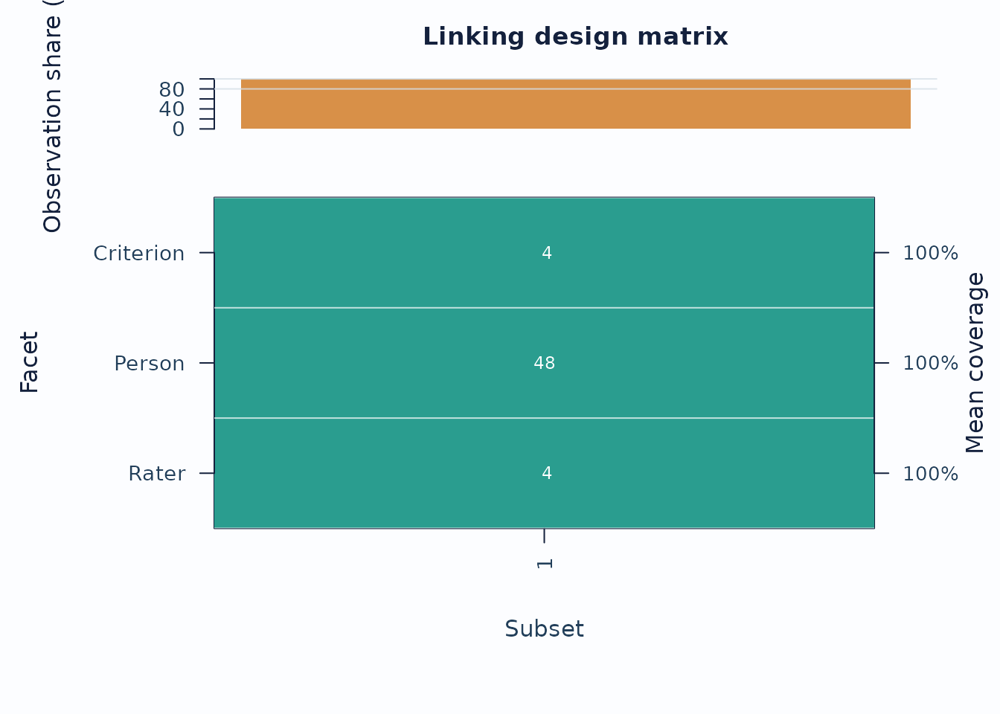
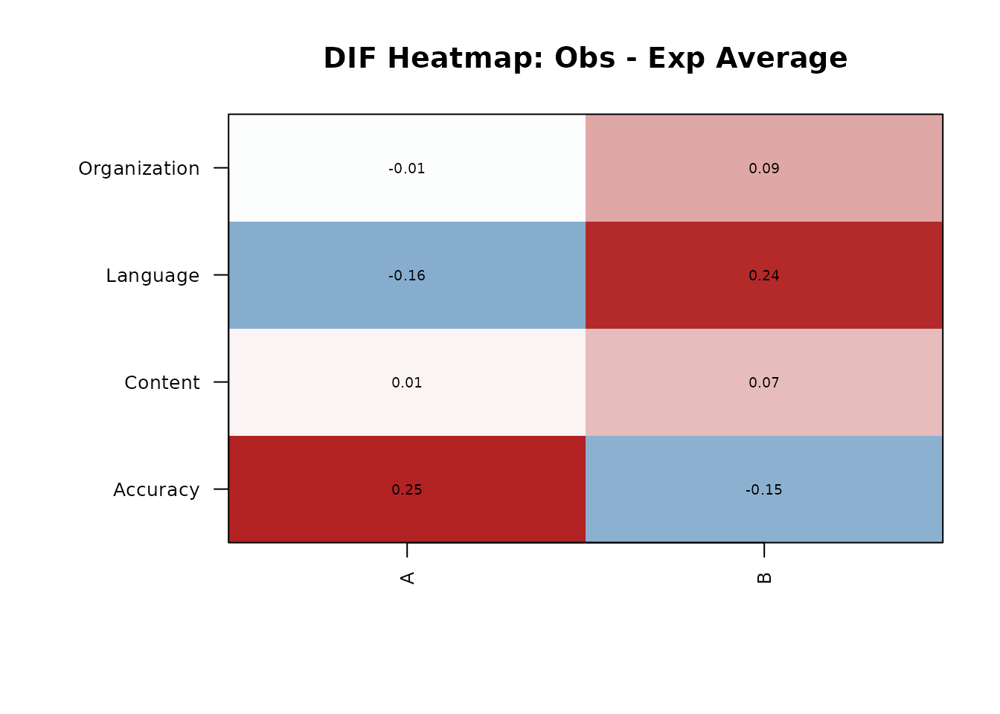

This vignette covers the package-native route for:
- checking whether a design is connected enough for a common scale
- exporting anchor candidates from an existing fit
- screening differential facet functioning (DFF)
- deciding when subgroup contrasts are descriptive versus formally comparable
For a broader workflow guide, see
vignette("mfrmr-workflow", package = "mfrmr"). For the
shorter help-page map, see
help("mfrmr_linking_and_dff", package = "mfrmr").
Minimal setup
library(mfrmr)
bias_df <- load_mfrmr_data("example_bias")
# The vignette uses compact quadrature so optional local execution stays fast.
# For final DFF or linking evidence, refit with the package default or a higher
# quadrature setting and record that setting in the analysis log.
fit <- fit_mfrm(
bias_df,
person = "Person",
facets = c("Rater", "Criterion"),
score = "Score",
method = "MML",
model = "RSM",
quad_points = 7
)
diag <- diagnose_mfrm(fit, residual_pca = "none")1. Check connectedness first
Use subset_connectivity_report() before interpreting
subgroup or cross-form contrasts.
sc <- subset_connectivity_report(fit, diagnostics = diag)
sc$summary[, c("Subset", "Observations", "ObservationPercent")]
#> Subset Observations ObservationPercent
#> 1 1 384 100
plot(sc, type = "design_matrix", preset = "publication")
Interpretation:
- Sparse rows or columns indicate weaker design coverage.
- Weak coverage should lower confidence in subgroup comparisons.
2. Export anchor candidates
make_anchor_table() is the shortest route when you need
reusable anchor elements from an existing calibration.
anchors <- make_anchor_table(fit, facets = "Criterion")
head(anchors)
#> # A tibble: 4 × 3
#> Facet Level Anchor
#> <chr> <chr> <dbl>
#> 1 Criterion Accuracy 0.524
#> 2 Criterion Content -0.199
#> 3 Criterion Language -0.275
#> 4 Criterion Organization -0.0498Use review_mfrm_anchors() when you want a stricter
review of anchor quality.
3. Residual DFF as a screening layer
Residual DFF is the fast screening route. It is useful for triage, but it is not automatically a logit-scale inferential contrast.
dff_resid <- analyze_dff(
fit,
diag,
facet = "Criterion",
group = "Group",
data = bias_df,
method = "residual"
)
dff_resid$summary
#> # A tibble: 3 × 2
#> Classification Count
#> <chr> <int>
#> 1 Screen positive 2
#> 2 Screen negative 2
#> 3 Unclassified 0
head(
dff_resid$dif_table[, c("Level", "Group1", "Group2", "Classification", "ClassificationSystem")],
8
)
#> # A tibble: 4 × 5
#> Level Group1 Group2 Classification ClassificationSystem
#> <chr> <chr> <chr> <chr> <chr>
#> 1 Accuracy A B Screen positive screening
#> 2 Content A B Screen negative screening
#> 3 Language A B Screen positive screening
#> 4 Organization A B Screen negative screening
plot_dif_heatmap(dff_resid)
Interpretation:
- Treat
residualoutput as screening evidence. - Check
ClassificationSystemto see how the current residual screen was labeled. - Reserve
ScaleLinkStatusandContrastComparablefor refit-based contrasts.
4. Refit DFF when subgroup comparisons are defensible
The refit route can support logit-scale contrasts only when subgroup linking is adequate and the precision layer supports it.
dff_refit <- analyze_dff(
fit,
diag,
facet = "Criterion",
group = "Group",
data = bias_df,
method = "refit"
)
dff_refit$summary
#> # A tibble: 5 × 2
#> Classification Count
#> <chr> <int>
#> 1 A (Negligible) 0
#> 2 B (Moderate) 0
#> 3 C (Large) 0
#> 4 Linked contrast (screening only) 0
#> 5 Unclassified (insufficient linking) 4
head(
dff_refit$dif_table[, c("Level", "Group1", "Group2", "Classification", "ContrastComparable")],
8
)
#> # A tibble: 4 × 5
#> Level Group1 Group2 Classification ContrastComparable
#> <chr> <chr> <chr> <chr> <lgl>
#> 1 Accuracy A B Unclassified (insufficient link… FALSE
#> 2 Content A B Unclassified (insufficient link… FALSE
#> 3 Language A B Unclassified (insufficient link… FALSE
#> 4 Organization A B Unclassified (insufficient link… FALSE5. Cell-level follow-up
If the level-wise screen points to a specific facet, follow up with the interaction table and narrative report.
dit <- dif_interaction_table(
fit,
diag,
facet = "Criterion",
group = "Group",
data = bias_df
)
head(dit$table)
#> # A tibble: 6 × 15
#> Level GroupValue N ObsScore ExpScore ObsExpAvg Var_sum sparse StdResidual
#> <chr> <chr> <int> <int> <dbl> <dbl> <dbl> <lgl> <dbl>
#> 1 Accur… A 48 125 113. 0.251 28.5 FALSE 2.26
#> 2 Accur… B 48 117 124. -0.150 29.2 FALSE -1.33
#> 3 Conte… A 48 134 134. 0.00969 27.8 FALSE 0.0882
#> 4 Conte… B 48 148 144. 0.0745 26.1 FALSE 0.700
#> 5 Langu… A 48 128 136. -0.159 27.5 FALSE -1.46
#> 6 Langu… B 48 158 146. 0.242 25.6 FALSE 2.30
#> # ℹ 6 more variables: t <dbl>, df <dbl>, p_value <dbl>, p_adjusted <dbl>,
#> # flag_t <lgl>, flag_bias <lgl>
dr <- dif_report(dff_resid)
cat(dr$narrative)
#> DIF screening was conducted for the Criterion facet across levels of Group using the residual method. A total of 4 pairwise facet-level comparisons were evaluated. 2 comparison(s) were screening-positive and 2 were screening-negative based on the residual-contrast test.
#> The following Criterion level(s) showed screening-positive residual contrasts: Accuracy, Language. - Accuracy: A vs B (contrast = 0.401 on the residual scale; A was higher). - Language: A vs B (contrast = -0.401 on the residual scale; A was lower).
#> Note: The presence of differential functioning does not necessarily indicate measurement bias. Differential functioning may reflect construct-relevant variation (e.g., true group differences in the attribute being measured) rather than unwanted measurement bias. Substantive review is recommended to distinguish between these possibilities (cf. Eckes, 2011; McNamara & Knoch, 2012).6. Model-estimated facet interactions
Residual bias and DFF tools screen for unusual cells after fitting
the additive model. When the interaction hypothesis is specified in
advance, use facet_interactions to estimate the named
two-way non-person facet interaction in the model likelihood.
fit_add <- fit_mfrm(
bias_df,
person = "Person",
facets = c("Rater", "Criterion"),
score = "Score",
method = "MML",
model = "RSM",
quad_points = 7
)
fit_interaction <- fit_mfrm(
bias_df,
person = "Person",
facets = c("Rater", "Criterion"),
score = "Score",
method = "MML",
model = "RSM",
facet_interactions = "Rater:Criterion",
quad_points = 7
)
interaction_effect_table(fit_interaction)
compare_mfrm(Additive = fit_add, Interaction = fit_interaction, nested = TRUE)Interpretation:
- Name the facet pair explicitly before fitting.
- Treat the interaction estimates as fixed-effect deviations from the additive MFRM under zero marginal-sum constraints.
- Inspect sparse interaction cells before reporting substantive claims.
- Keep this route separate from residual screening with
estimate_bias().
7. Multi-wave anchor review
When you work across administrations, the route usually moves from anchor export to anchored fitting and then to drift review.
d1 <- load_mfrmr_data("study1")
d2 <- load_mfrmr_data("study2")
fit1 <- fit_mfrm(d1, "Person", c("Rater", "Criterion"), "Score",
method = "JML", maxit = 25)
fit2 <- fit_mfrm(d2, "Person", c("Rater", "Criterion"), "Score",
method = "JML", maxit = 25)
anchored <- anchor_to_baseline(
d2,
fit1,
person = "Person",
facets = c("Rater", "Criterion"),
score = "Score"
)
drift <- detect_anchor_drift(list(Wave1 = fit1, Wave2 = fit2))
plot_anchor_drift(drift, type = "drift", preset = "publication")Recommended sequence
For a compact linking route:
fit_mfrm()diagnose_mfrm()subset_connectivity_report()-
make_anchor_table()orreview_mfrm_anchors() analyze_dff()-
dif_report()andplot_dif_heatmap() -
interaction_effect_table()after a confirmatoryfacet_interactionsfit -
anchor_to_baseline()/detect_anchor_drift()when working across waves